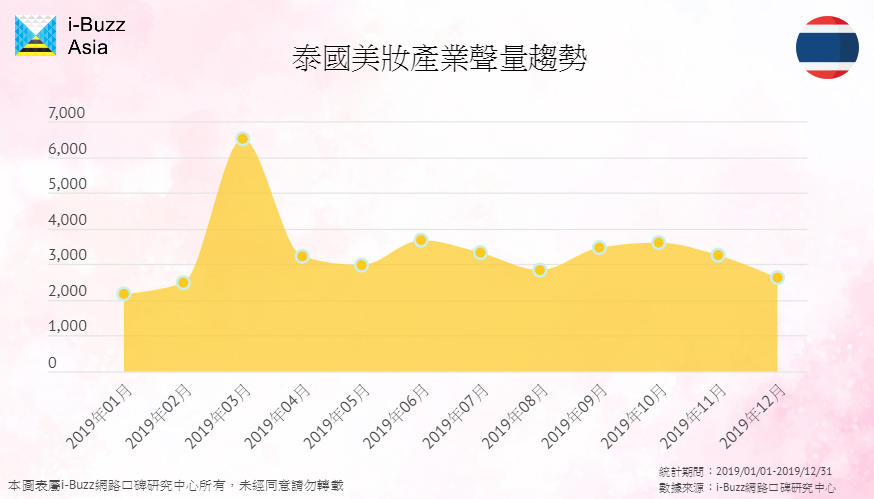
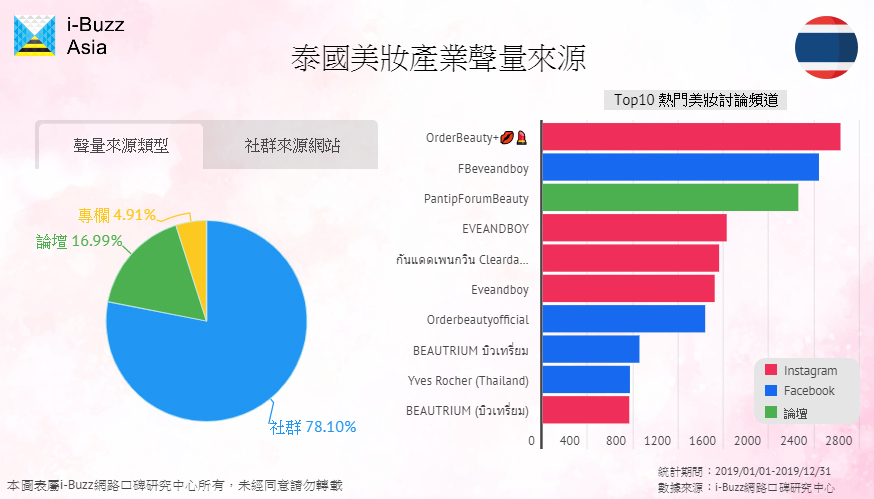
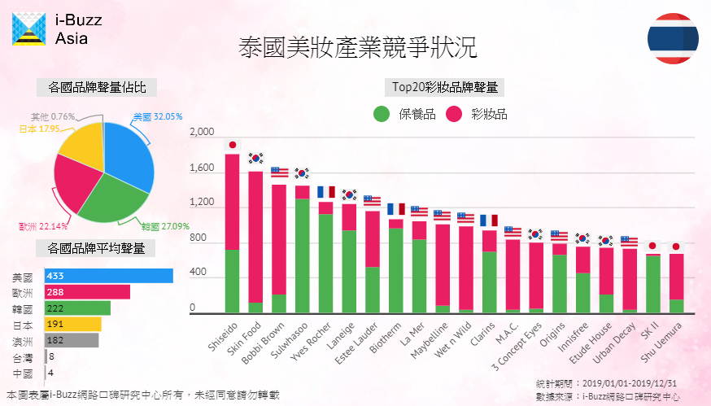
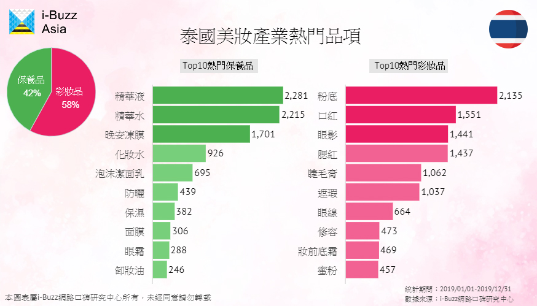
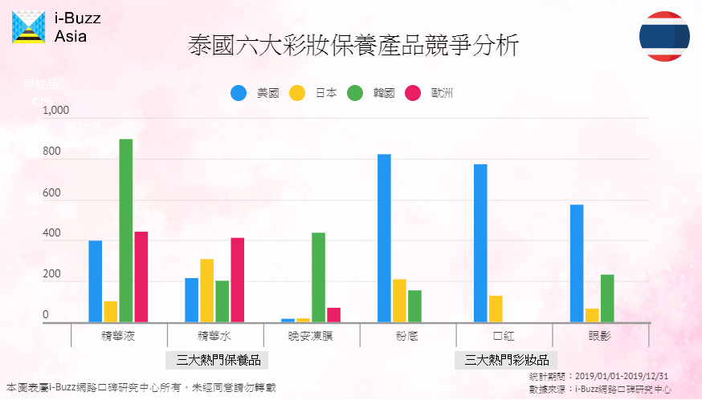
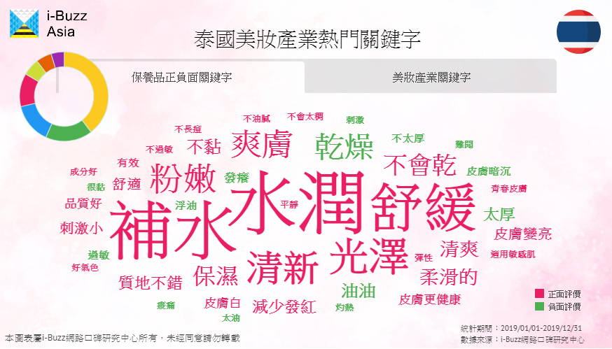

泰國美妝保養產業環境分析：遭歐美韓夾殺 日系品牌應如何挽回頹勢？
數據期間：2019/01/01-2019/12/31
泰國是東協地區最大的美妝市場，吸引許多國際品牌進駐設廠，也形成現今美、歐、韓、日四強相互角力的情勢。i-Buzz Asia跨境產業研究報告發現，多數日本品牌聲量輸給歐美韓品牌，僅有Shiseido表現突出聲量居冠，這證明日本品牌其實具備一定實力，究竟多數的日本品牌輸在哪？想扭轉局勢該把握那些要點？
產業聲量趨勢：全年多檔次 三月暑假為關鍵檔期
i-Buzz Asia跨境產業研究報告發現，不同於越南，泰國美妝保養檔期多，6-8月有等同於台灣周年慶的「驚喜購物節」；10月也有針對觀光客推動的購物季，迎接旅遊旺季的到來。最關鍵的還是每年3、4月的暑假檔期，長達兩個月半的假期使聲量達到最高峰。
▲泰國美妝保養產業 2019年聲量趨勢 圖表出處 i-Buzz Asia跨境產業研究報告
產業聲量來源：FB、IG、論壇不可偏廢 Pantip美妝版聲量高居第三
泰國美妝保養產業聲量以社群來源最多，其中FB和IG的討論占比相當，尤其是近年崛起的美妝零售商，如orderbeauty，多會同時經營Instagram和Facebook粉絲團，做為促銷訊息或新品宣傳用，美妝品牌涉足泰國市場時，需特別留意社群的聲量表現。社群固然重要，亦不可小看論壇的影響力，從十大熱門美妝討論頻道來看，Pantip的美妝版聲量高居第三，且話題內容多反映消費者真實心聲，是美妝保養話題的重要討論區，故不可偏廢社群聲量來源。
▲泰國美妝保養產業聲量來源 圖表出處 i-Buzz Asia跨境產業研究報告
產業競爭狀況：美歐韓品牌強勢問鼎 日本品牌只剩Shiseido站得住腳
i-Buzz Asia跨境產業調查報告顯示，美歐日韓瓜分泰國美妝市場，以美國品牌的平均表現最出色，韓國多家品牌也強勢問鼎，日本品牌聲量明顯落後，如何從歐美強勢廠牌及韓流衝擊中脫穎而出，是日本品牌現下最大的挑戰。
從泰國Top20熱門美妝保養品牌排行來看，會發現日本品牌Shiseido奪冠，且旗下的保養品與美妝品皆累積不少口碑聲量，顯示日本品牌其實具備擊敗其他國家的實力，但從第2到18名都由美、歐、韓品牌囊括，其他日本知名品牌如SK II及Shu Uemura的討論量大幅落後，讓日本品牌平均表現不如美、歐、韓。
▲泰國美妝保養產業競爭狀況 圖表出處 i-Buzz Asia跨境產業研究報告
產業熱門產品：日系「精華液」產品慘敗 「粉底、口紅」值得與美國品牌一戰
i-Buzz Asia跨境產業研究報告發現，泰國美妝與保養品的討論聲量都不少，保養品的話題明顯集中於「精華液、精華水、晚安凍膜」三個品項，精華液和精華水是泰國消費者最基本的保養品，也因為泰國逐漸步入高齡社會，抗老產品的討論量越來越高；美妝品中最熱門的是粉底、口紅、眼影，因泰國人有白皙皮膚的審美觀，所以擦粉底為化妝重要步驟，使粉底成為討論度第一的美妝品。
▲泰國美妝保養產業熱門產品 圖表出處 i-Buzz Asia跨境產業研究報告
i-Buzz Asia跨境研究報告分析歐美日韓在重點產品上的聲量表現發現，在保養品上的競爭比美妝品激烈。保養品方面，日本品牌在精華液明顯落後其他國家，在精華水僅微幅輸給歐洲品牌。日本在精華產品具備很好的潛力，應該加強精華液的表現，弭補與其他國家巨大的落差。美妝品方面，粉底、口紅及眼影都由美國品牌一強獨大，然而儘管美國品牌占據三大熱門美妝品的聲量冠軍，但日本品牌在粉底及口紅聲量僅次美國，仍有日系美妝市場可以發揮與擴展。
▲泰國美妝保養產業歐美日韓品牌表現 圖表出處 i-Buzz Asia跨境產業研究報告
產業熱門關鍵字：保養品重「護膚、保濕」功效 「實體通路」為主要消費渠道
日系保養品要與歐、韓品牌較勁，可透過i-Buzz Asia產業熱門關鍵字瞭解消費者需求。「膚況保養」與「保濕需求」為兩大保養關鍵，熱門關鍵字如「舒緩、光澤、粉嫩、爽膚」都和皮膚相關，可知泰國人特別重視「膚況保養」。另外，因泰國氣候乾濕分明，消費者格外重視保濕工作，保養品又以「水潤、補水」功能最常被提及，負面關鍵字中出現的「乾燥」再次呼應保濕的重要性。
▲泰國美妝保養產業熱門關鍵字 圖表出處 i-Buzz Asia跨境產業研究報告
特別的是，泰國美妝保養產業關鍵字與其他東南亞國家不同，以「通路」面討論最熱門，實體百貨公司通路關鍵字反映泰國人傾向從實體通路購買美妝產品，也相當關注周年慶、促銷、限量等廣告行銷活動，是進軍泰國美妝市場不可忽視的重要特色。
抓緊泰國美妝保養市場要點 日系品牌有望奪回市場主導權
綜觀i-Buzz Asia跨境研究報告，日本品牌在泰國市場遭逢歐美韓勁敵，聲量表現不如他國品牌。然而Shiseido在強敵環伺下屹立不搖卻也證明日系品牌有堅強實力，其他品牌要挽回在泰國發展的頹勢必須把握這些關鍵。
在泰國美妝保養市場，「多元」的特性一覽無遺，一年就有三個重要的美妝購物檔期；FB、IG、論壇皆是美妝聲量的重要來源；熱門的美妝保養品也相當多元。日系品牌可以努力的方向是，把握精華液、精華水、粉底等重點產品的聲量表現，抓住泰國人重視的皮膚保養與保濕重點，並搭配實體百貨通路的熱銷檔期，未來應有機會發揮領頭羊作用，帶動其他日系品牌在泰國的人氣，一步步從歐美、韓國等強勢品牌手中奪回市場主導權！
- 01泰國美妝保養產業環境分析：遭歐美韓夾殺 日系品牌應如何挽回頹勢？
- 02馬來西亞美保產業環境分析報告：日本美妝品表現不佳 粉底產品為落後關鍵
- 03越南美保產業環境報告：把握五大關鍵要點 MIT也能與日韓品牌角逐越南市場
- 04不打價格戰！Leffe以「口味」搶攻亞洲第三大啤酒市場
- 05國際與本土品牌的對決：Foodpanda和GrabFood在大馬的勝利秘訣
- 06泰國Q4新創產業洞察：美食與金融新創為發展重點
- 07越南消費者購車看外表？機車造型好不好看決勝負
- 08不敢相信！蘋果耳機聲量竟被Sony壓著打
- 09看準印尼旅遊市場潛力 廉價航空、線上旅行社百花齊放
- 10馬來西亞手搖飲內用商機大 清真認證搶攻穆斯林客群